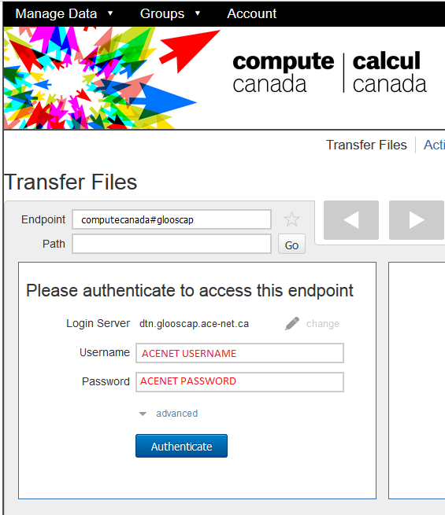

Transferring many gigabytes of data in to or out of a cluster can be troublesome with the basic tools described in our User Guide. Compute Canada has adopted Globus Connect nation-wide as a common technology to make large-scale data transfer easy and efficient.
Primary documentation for using Globus can be found here:
There are Globus endpoints at all four ACENET clusters:
When using Globus Online, you activate an endpoint at an ACENET machine simply by supplying your ACENET username and password when prompted. It may say "passphrase" instead of "password"; they mean the same thing in this context.
